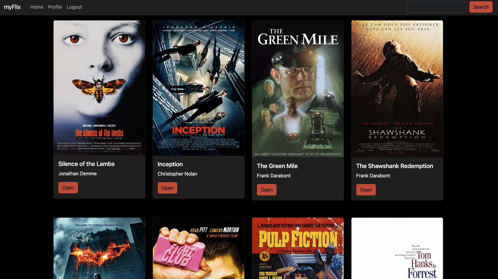
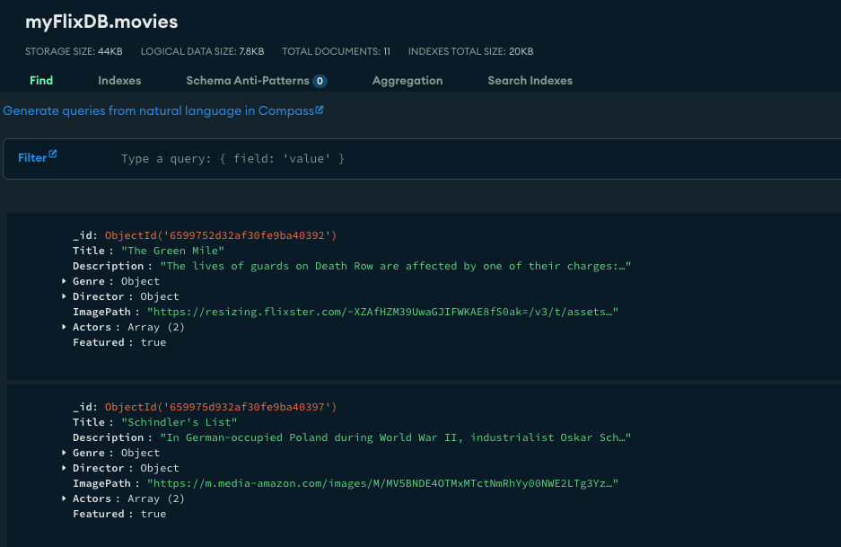

myFlix App, React
Github/frontEnd Github/backEnd LinkThis is the first full front- and back-end application I ever built, using Node, Express, MongoDB, and React.
Back-End
Building a server-side application using Node, Express, and MongoDB. I learned about the infrastructure of back-end applications (e.g., Server -> Business Logic -> Data Base). Building my own Database of movies and making sure to organize my data accurately and consistently. We were directed to work with a nonSQL database and to build our data using AI to help create the mock data.
We then created the business logic and server functions. Creating endpoints for HTTP requests and learning about READ, PUT, POST, DELETE requests.
Front-End
This was my first time working with React. Once I got over the learning curve, I fell in love with react. I enjoy the passing of data and using states to store information. I had a vision right away for how I wanted this application to look and was very excited to build it into what I was looking for.
I learned the value of clear documentation now that I needed to interact with my own API. Many lessons were learned as I initially struggled to connect to the endpoints that I built. I ended up going back and redefining my documentation to make it more clear.